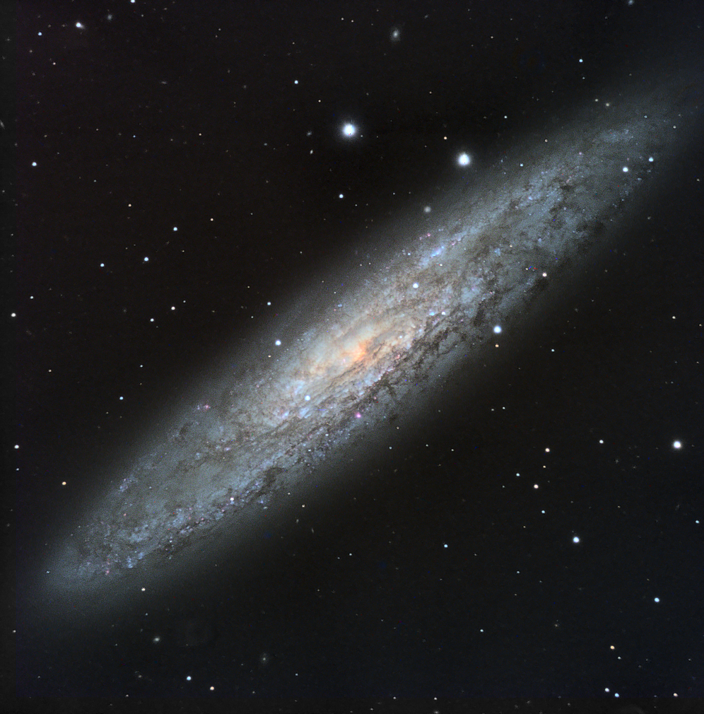

NGC 253 imaged under light polluted and hazy (smoke filled) skies on October 31st.
A combination of 2 hours of luminance, combined with 30 minutes each of RGB. The image was hurriedly processed in PixInsight, and tweaked in Photoshop.
(click on image for full size version)
